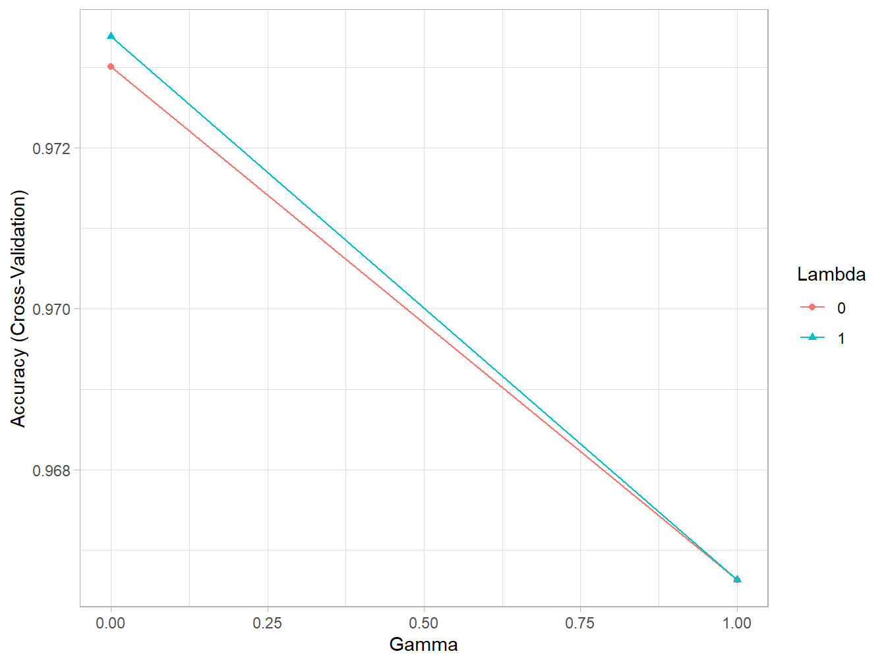

3 Análisis Discriminante
En esta sección nos concentramos en el problema de clasificación. Particularmente, estudiaremos los métodos de Análisis Discriminante Lineal (LDA), Cuadrático (QDA) y Regularizado (RDA). Usaremos el conjunto de datos Default del paquete ISLR:
## default student balance income
## 1 No No 729.5265 44361.625
## 2 No Yes 817.1804 12106.135
## 3 No No 1073.5492 31767.139
## 4 No No 529.2506 35704.494
## 5 No No 785.6559 38463.496
## 6 No Yes 919.5885 7491.559
## 7 No No 825.5133 24905.227
## 8 No Yes 808.6675 17600.451
## 9 No No 1161.0579 37468.529
## 10 No No 0.0000 29275.268## 'data.frame': 10000 obs. of 4 variables:
## $ default: Factor w/ 2 levels "No","Yes": 1 1 1 1 1 1 1 1 1 1 ...
## $ student: Factor w/ 2 levels "No","Yes": 1 2 1 1 1 2 1 2 1 1 ...
## $ balance: num 730 817 1074 529 786 ...
## $ income : num 44362 12106 31767 35704 38463 ...El objetivo es predecir si un sujeto de la muestre fallará en el pago de su tarjeta de crédito. Por tanto, la variable respuesta es default, categórica con solo los niveles Yes y No. Tenemos información sobre el balance mensual de crédito en balance, el salario anual en income y si es estudiante o no en student. Solo un \(3\%\) de la muestra (\(n = 10000\)), así que es una muestra muy desbalanceada.
## default student balance income
## No :9667 No :7056 Min. : 0.0 Min. : 772
## Yes: 333 Yes:2944 1st Qu.: 481.7 1st Qu.:21340
## Median : 823.6 Median :34553
## Mean : 835.4 Mean :33517
## 3rd Qu.:1166.3 3rd Qu.:43808
## Max. :2654.3 Max. :73554##
## No Yes
## 0.9667 0.0333Nos concentramos en predecir default a partir de las variables predictoras balance e income. En el siguiente diagrama de dispersión se observa cierto solapamiento entre las clases a predecir, pero una clara diferenciación de acuerdo a la variable balance.
library(ggplot2)
library(gridExtra)
## Scatter plot con densidades ----
plot.2d <- ggplot(Default, aes(x = balance, y = income, group = default)) +
geom_point(aes(shape = default, color = default), alpha = 0.5) +
theme_light()
# Empty plot
empty <- ggplot()+geom_point(aes(1,1), color="white") +
theme(
plot.background = element_blank(),
panel.grid.major = element_blank(),
panel.grid.minor = element_blank(),
panel.border = element_blank(),
panel.background = element_blank(),
axis.title.x = element_blank(),
axis.title.y = element_blank(),
axis.text.x = element_blank(),
axis.text.y = element_blank(),
axis.ticks = element_blank()
)
# arriba
dens.balance <- ggplot(Default, aes(x = balance, group = default)) +
geom_density(aes(color = default, fill = default), alpha = 0.2) +
theme_light()+
theme(legend.position = "none")
# derecha
dens.income <- ggplot(Default, aes(x = income, group = default)) +
geom_density(aes(color = default, fill = default), alpha = 0.2) +
theme_light() + coord_flip() +
theme(legend.position = "none")
grid.arrange(dens.balance, empty, plot.2d, dens.income, ncol=2, nrow=2, widths=c(4, 1), heights=c(1, 4))3.1 Análisis Discriminante Lineal
df <- Default[, c("income", "balance", "default")]
set.seed(123)
train.ID <- createDataPartition(df$default, p = 0.8, list = FALSE)
train_df <- df[train.ID, ]
test_df <- df[-train.ID, ]
# definimos como control una validación cruzada con 10 hojas, sin repeticiones
fit_control <- trainControl(method='cv', number = 10)
set.seed(123)
model_lda_def <- train(default ~.,
data = train_df,
method = "lda",
trControl = fit_control)
model_lda_def## Linear Discriminant Analysis
##
## 8001 samples
## 2 predictor
## 2 classes: 'No', 'Yes'
##
## No pre-processing
## Resampling: Cross-Validated (10 fold)
## Summary of sample sizes: 7200, 7200, 7201, 7202, 7201, 7202, ...
## Resampling results:
##
## Accuracy Kappa
## 0.973379 0.3710518## Call:
## lda(x, grouping = y)
##
## Prior probabilities of groups:
## No Yes
## 0.96662917 0.03337083
##
## Group means:
## income balance
## No 33513.73 805.9109
## Yes 32450.16 1753.3628
##
## Coefficients of linear discriminants:
## LD1
## income 9.334558e-06
## balance 2.233976e-03La precisión durante el entrenamiento es de un \(\approx 97\%\). También vemos que las probabilidades a priori \(\pi_i, i = 1,2\) de pertenecer a cada clase son aproximadamente \(97\%\) y \(3\%\) respectivamente, lo cual corresponde a la razón de fallo que se comenta al inicio. El resultado Coefficients of linear discriminants indica las constantes que se multiplican a cada elemento de la muestra \((\text{income}_i, \text{balance}_i)\), \(i = 1, \ldots, n_{\text{train}}\), para obtener su correspondiente valor de la función discriminante lineal:
\[ \delta_k(x) = x^T \Sigma^{-1} \mu_k - \dfrac{1}{2} \mu_k^T \Sigma^{-1} \mu_k+ log(\pi_k) \]
Todo indica que la variable balance tiene un mayor peso en la discriminación. Como alternativa, podemos comprobarlo usando varImp:
## ROC curve variable importance
##
## Importance
## balance 100
## income 0Veamos ahora qué tal es el ajuste en los datos test.
# hagamos las predicciones del conjunto de prueba
prediction_lda_def <- predict(model_lda_def, newdata = test_df)
confusionMatrix(prediction_lda_def, reference = test_df$default)## Confusion Matrix and Statistics
##
## Reference
## Prediction No Yes
## No 1927 54
## Yes 6 12
##
## Accuracy : 0.97
## 95% CI : (0.9615, 0.977)
## No Information Rate : 0.967
## P-Value [Acc > NIR] : 0.2488
##
## Kappa : 0.2755
##
## Mcnemar's Test P-Value : 1.298e-09
##
## Sensitivity : 0.9969
## Specificity : 0.1818
## Pos Pred Value : 0.9727
## Neg Pred Value : 0.6667
## Prevalence : 0.9670
## Detection Rate : 0.9640
## Detection Prevalence : 0.9910
## Balanced Accuracy : 0.5894
##
## 'Positive' Class : No
## # extraemos el Accuracy o Precisión
confusionMatrix(prediction_lda_def, reference = test_df$default)$overall[1]## Accuracy
## 0.969985# la tasa de error
tasa.error.lda <- 1-confusionMatrix(prediction_lda_def, reference = test_df$default)$overall[1]
names(tasa.error.lda) <- "Error LDA"
tasa.error.lda## Error LDA
## 0.03001501Como estamos en un problema de clasificación en dos dimensiones (\(p = 2\)), es posible representar la frontera de decisión del algoritmo, usando la función decision_bound. Debemos modificar los campos para que coincidan con las variables de Default:
decision_bound = function(train_df_in, test_df_in, model_in){
# plot decision boundary for df <- Default[, c("income", "balance", "default")]
require(MASS)
require(caret)
require(ggplot2)
require(gridExtra)
# Paso 1: crear un grid de valores desde min a max de ambos predictores
pl = seq(min(train_df_in$balance), max(train_df_in$balance), length.out = 80)
pw = seq(min(train_df_in$income), max(train_df_in$income), length.out = 80)
lgrid <- expand.grid(balance=pl, income=pw)
# Paso 2: obtener las predicciones tanto para el grid como para el test
modelPredGrid <- predict(model_in, newdata=lgrid)
train_df_in$Pred.Class <- predict(model_in, newdata = train_df_in)
test_df_in$Pred.Class <- predict(model_in, newdata = test_df_in)
# Paso 3: ggplot con la funcion contour
gg1 <- ggplot(data=lgrid) +
stat_contour(aes(x=balance, y=income, z=as.numeric(modelPredGrid)), bins=2) +
geom_point(aes(x=balance, y=income, colour=modelPredGrid), alpha=0.1) +
labs(colour = "Clases") + ggtitle("Train") +
geom_point(data=train_df_in,
aes(x=balance, y=income,
colour=default), size=5, shape=1) +
theme_light()
gg2 <- ggplot(data=lgrid) +
stat_contour(aes(x=balance, y=income, z=as.numeric(modelPredGrid)), bins=2) +
geom_point(aes(x=balance, y=income, colour=modelPredGrid), alpha=0.1) +
labs(colour = "Clases") + ggtitle("Test") +
geom_point(data=test_df_in,
aes(x=balance, y=income,
colour=default), size=5, shape=1) +
theme_light()
grid.arrange(gg1, gg2, ncol=1, nrow=2)
}
3.2 Análisis Discriminante Cuadrático
El ajuste para el modelo QDA lo hacemos con el mismo control y la misma partición de la muestra.
set.seed(123)
model_qda_def <- train(default ~.,
data = train_df,
method = "qda",
trControl = fit_control)
model_qda_def## Quadratic Discriminant Analysis
##
## 8001 samples
## 2 predictor
## 2 classes: 'No', 'Yes'
##
## No pre-processing
## Resampling: Cross-Validated (10 fold)
## Summary of sample sizes: 7200, 7200, 7201, 7202, 7201, 7202, ...
## Resampling results:
##
## Accuracy Kappa
## 0.9730043 0.3787741## Call:
## qda(x, grouping = y)
##
## Prior probabilities of groups:
## No Yes
## 0.96662917 0.03337083
##
## Group means:
## income balance
## No 33513.73 805.9109
## Yes 32450.16 1753.3628Los resultados al entrenar son similares al caso LDA. Veamos las predicciones para la muestra test.
# hagamos las predicciones del conjunto de prueba
prediction_qda_def <- predict(model_qda_def, newdata = test_df)
confusionMatrix(prediction_qda_def, reference = test_df$default)## Confusion Matrix and Statistics
##
## Reference
## Prediction No Yes
## No 1924 51
## Yes 9 15
##
## Accuracy : 0.97
## 95% CI : (0.9615, 0.977)
## No Information Rate : 0.967
## P-Value [Acc > NIR] : 0.2488
##
## Kappa : 0.3214
##
## Mcnemar's Test P-Value : 1.203e-07
##
## Sensitivity : 0.9953
## Specificity : 0.2273
## Pos Pred Value : 0.9742
## Neg Pred Value : 0.6250
## Prevalence : 0.9670
## Detection Rate : 0.9625
## Detection Prevalence : 0.9880
## Balanced Accuracy : 0.6113
##
## 'Positive' Class : No
## # extraemos el Accuracy o Precisión
confusionMatrix(prediction_qda_def, reference = test_df$default)$overall[1]## Accuracy
## 0.969985# la tasa de error
tasa.error.qda <- 1-confusionMatrix(prediction_qda_def, reference = test_df$default)$overall[1]
names(tasa.error.qda) <- "Error QDA"
tasa.error.qda## Error QDA
## 0.03001501Tampoco se logran mejorar los resultados. Finalmente, representamos la frontera de decisión del algoritmo.
¡Ahora observamos que las regiones están separadas por curvas, en lugar de la recta del LDA!
3.3 Análisis Discriminante Regularizado
Opción 1: el paquete caret crea el grid para \((\lambda, \gamma)\):
set.seed(123)
model_rda_def <- train(default ~.,
data = train_df,
method = "rda",
tuneLength = 2,
trControl = fit_control)
model_rda_def## Regularized Discriminant Analysis
##
## 8001 samples
## 2 predictor
## 2 classes: 'No', 'Yes'
##
## No pre-processing
## Resampling: Cross-Validated (10 fold)
## Summary of sample sizes: 7200, 7200, 7201, 7202, 7201, 7202, ...
## Resampling results across tuning parameters:
##
## gamma lambda Accuracy Kappa
## 0 0 0.9730043 0.3787741
## 0 1 0.9733790 0.3710518
## 1 0 0.9666297 0.0000000
## 1 1 0.9666297 0.0000000
##
## Accuracy was used to select the optimal model using the largest value.
## The final values used for the model were gamma = 0 and lambda = 1.## Call:
## rda.default(x = x, grouping = y, gamma = param$gamma, lambda = param$lambda)
##
## Regularization parameters:
## gamma lambda
## 0 1
##
## Prior probabilities of groups:
## No Yes
## 0.96662917 0.03337083
##
## Misclassification rate:
## apparent: 2.662 %# en este caso el ggplot nos da información sobre los
# hiperparametros y su correspondiente Accuracy
ggplot(model_rda_def) + theme_light()
Opción 2: podemos proporcionar un grid predefinido de valores \((\lambda, \gamma)\) en un data.frame que le pasamos a tuneGrid:
# el grid se puede definir tambien "a mano"
mi.grid <- data.frame(lambda = c(0, 0.3, 0.6, 1) ,
gamma = c(0, 0, 0, 0))
set.seed(123)
model_rda_def <- train(default ~.,
data = train_df,
method = "rda",
tuneGrid = mi.grid,
trControl = fit_control)
model_rda_def## Regularized Discriminant Analysis
##
## 8001 samples
## 2 predictor
## 2 classes: 'No', 'Yes'
##
## No pre-processing
## Resampling: Cross-Validated (10 fold)
## Summary of sample sizes: 7200, 7200, 7201, 7202, 7201, 7202, ...
## Resampling results across tuning parameters:
##
## lambda Accuracy Kappa
## 0.0 0.9730043 0.3787741
## 0.3 0.9733790 0.3791078
## 0.6 0.9735039 0.3764691
## 1.0 0.9733790 0.3710518
##
## Tuning parameter 'gamma' was held constant at a value of 0
## Accuracy was used to select the optimal model using the largest value.
## The final values used for the model were gamma = 0 and lambda = 0.6.## Call:
## rda.default(x = x, grouping = y, gamma = param$gamma, lambda = param$lambda)
##
## Regularization parameters:
## gamma lambda
## 0.0 0.6
##
## Prior probabilities of groups:
## No Yes
## 0.96662917 0.03337083
##
## Misclassification rate:
## apparent: 2.675 %# en este caso el ggplot nos da información sobre los
# hiperparametros y su correspondiente Accuracy
ggplot(model_rda_def) + theme_light()
Los resultados indican que los hiperparámetros óptimos en este caso corresponden a \((\lambda, \gamma) = (0.6, 0)\). Esto que hemos hecho es comparar diferentes modelos (porque han sido ajustados con diferentes hiperparámetros) resultantes del mismo algoritmo. Veamos las predicciones para la muestra test, la tasa de error correspondiente y la frontera de decisión.
# hagamos las predicciones del conjunto de prueba
prediction_rda_def <- predict(model_rda_def, newdata = test_df)
confusionMatrix(prediction_rda_def, reference = test_df$default)## Confusion Matrix and Statistics
##
## Reference
## Prediction No Yes
## No 1926 52
## Yes 7 14
##
## Accuracy : 0.9705
## 95% CI : (0.9621, 0.9775)
## No Information Rate : 0.967
## P-Value [Acc > NIR] : 0.2098
##
## Kappa : 0.3109
##
## Mcnemar's Test P-Value : 1.014e-08
##
## Sensitivity : 0.9964
## Specificity : 0.2121
## Pos Pred Value : 0.9737
## Neg Pred Value : 0.6667
## Prevalence : 0.9670
## Detection Rate : 0.9635
## Detection Prevalence : 0.9895
## Balanced Accuracy : 0.6042
##
## 'Positive' Class : No
## # extraemos el Accuracy o Precisión
confusionMatrix(prediction_rda_def, reference = test_df$default)$overall[1]## Accuracy
## 0.9704852# la tasa de error
tasa.error.rda <- 1-confusionMatrix(prediction_rda_def, reference = test_df$default)$overall[1]
names(tasa.error.rda) <- "Error RDA"
tasa.error.rda## Error RDA
## 0.02951476